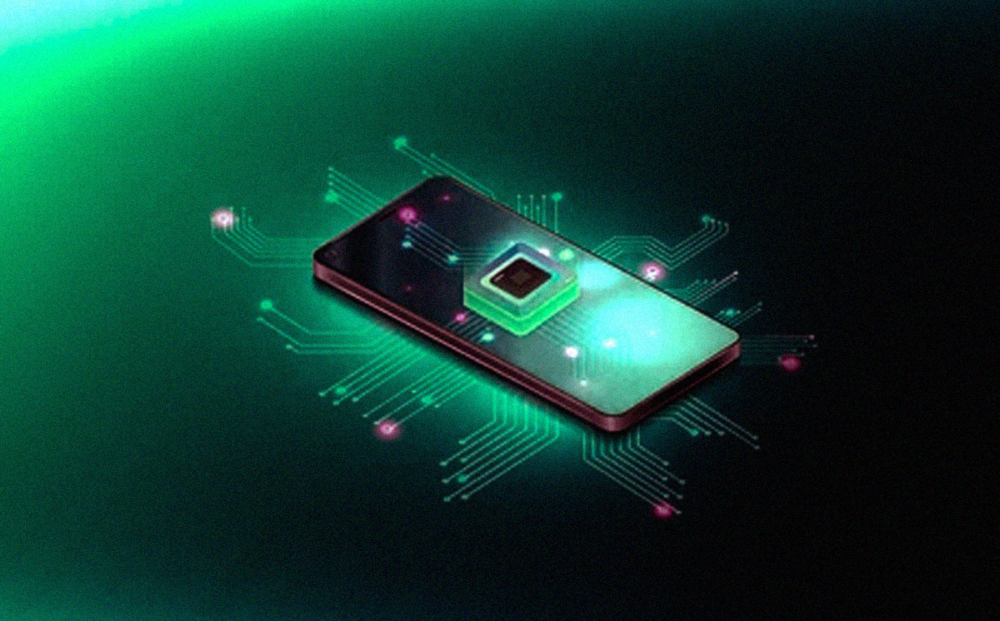

Not your typical form factor. The NX-01 is a slim, sleek, sliding phone equipped with a dual touchscreen.
Tech Specs

The basics in cutting edge technology. Click stars to learn more
Process This!

Slim in form, Thick in power. The new ECHO Dragonwave Processor is a faster, more efficient processor makes a phone feel smoother, quicker, and better at multitasking while using less battery.
Say Cheese!!

The NX-01 has enough camera power to compete with all of its rivals. including Ultra-WIde Zoom, a live filter adjustment mode, and many other amenities to give you the perfect shot.
Customizable UI

Soooo many options, Make it your own! Customizable UI improves usability and personalization, allowing users to tailor their home screen and navigation to fit their style and workflow.
Meet Staria!

Staria is an AI-powered feature that helps users complete tasks through voice or text commands. It can answer questions, set reminders, send messages, control apps, manage schedules, and operate smart devices. By understanding natural language, a virtual assistant makes it faster and easier to interact with the phone hands-free.